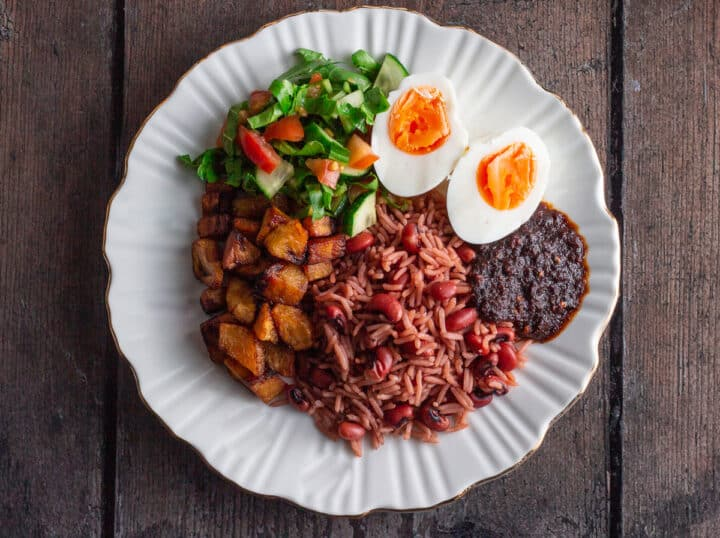

Ghana Waakye Recipe

Description
Waakye is a beloved Ghanaian dish that consists of rice and beans, often
served with a variety of accompaniments like fried plantains, boiled eggs,
spaghetti, fried fish, meat, or a rich stew.
The dish is known for its hearty and satisfying nature, with the beans and
rice cooked together, typically giving it a slightly smoky flavor.
The name "Waakye" comes from the combination of rice and beans, and it is
often cooked with dried millet leaves, which give the rice its
characteristic brownish color.
Ingredients
- 1 cup dried black-eyed peas (or red kidney beans)
-
6-8 dried millet leaves (or dried sorghum leaves, optional, but they
give the rice its signature color)
-
1 medium onion, chopped 1 tablespoon vegetable oil (or palm oil for
richer flavor)
-
1 teaspoon salt (to taste) 4 cups water (for cooking the rice and beans)
- 2 cups long-grain rice (or basmati rice)
Steps
-
Wash the dried beans thoroughly in cold water and then soak them for at
least 2 hours (or overnight if possible) to soften them. This step helps
in reducing the cooking time.
-
If using millet leaves (for the authentic Waakye color), wash them well,
then place them in a pot of water and boil for about 10 minutes to
extract the color. After boiling, remove the leaves and set aside. The
water from the millet leaves is what you’ll use to cook the rice and
beans.
-
In a large pot, add the soaked beans and cover them with about 3 cups of
water (or use the water from the millet leaves if you’ve boiled them).
Cook the beans over medium heat until they are tender, about 40 minutes
to an hour. Add more water if necessary to keep the beans covered while
cooking. Add salt to taste.
-
In a separate pan, rinse the rice in cold water until the water runs
clear. Once the beans are soft, add the rice to the pot with the cooked
beans, along with the remaining water (about 1-2 cups), depending on how
much liquid remains from cooking the beans. If you used millet leaf
water, pour it in now for the signature color and flavor.
-
Stir the rice and beans to combine, then cover the pot tightly and allow
the mixture to simmer on low heat for about 20-30 minutes, or until the
rice is cooked and has absorbed all the liquid. Keep an eye on it to
ensure the rice does not burn at the bottom. If necessary, add a little
water and continue cooking until the rice is tender.
-
Once the rice and beans are fully cooked, fluff the mixture with a fork
and let it sit for a few minutes before serving. The rice should have a
distinct brownish color, and the beans should be soft but not mushy.
-
To serve, place a generous portion of the Waakye (rice and beans) on a
plate. Add your choice of accompaniments such as fried plantains, boiled
eggs, grilled or fried fish, shito sauce, and a side of stew if desired.
Home